Houston
Nightlife2013–2025
Growth, thinning, replacement, and the limits of an administrative record.
Reported mixed-beverage taxable receipts. Not revenue, profit, attendance, or market power. All figures aggregate.
Start here
The short version.
Houston's nightlife sector did not collapse between 2013 and 2025. It became broader and thinner.
The number of strictly defined mixed-beverage-filing venues inside the city rose from 576 annual ever-active venues in 2013 to 805 in 2025, a 40% increase. Combined real reported receipts rose 17%, from $442.9M to $519.1M in June 2026 dollars. The count rose faster, 40%, so receipts per venue fell on average by 16%, from $768,930 to $644,788. The median fell further, 26%, from $486,931 to $361,409.
That is the central puzzle. More establishments were filing, but the typical establishment reported less. The report does not claim that new venues caused the decline, or that competition drove it. Total receipts equal the number of venues times the average, and the two terms can move together for many reasons: population and income growth, rents, formats, investment, and where people spend.
Five other findings matter.
Receipts became modestly more concentrated. The venue-level Gini rose from 0.564 to 0.595, and the top decile's share from 39.4% to 41.6%. No single venue dominates: the largest held 1.4% of 2025 receipts.
Activity moved east-northeast and became more clustered. The real-receipt-weighted centre moved about 1.6 km. The share of city receipts inside fixed clusters rose from 0.278 in 2013 to 0.481 in 2023, then eased to 0.404 in 2025.
Disappearance is not closure. Of 8,445 panel venues, 4,324 were operating at the panel end, 2,499 were closed, 1,324 were unknown, 180 relocated, and 118 were dormant or likely closed. Within the closed states, 1,425 are concept replacements at the same premise and 1,074 are ordinary closures. The record observes filings, not business events.
Some promising relationships could not be established. Ownership change, workplace employment, age-dependent competition, and most neighborhood-composition families ran into selection, pretrend, or support problems. The one surviving neighborhood association is narrow and covers venue counts only. The report treats those failures as findings, not as reasons to force a story.
Exit risk can be ranked, but not forecast. A simple drawdown and zero-reporting rule ranks venues above chance at 3, 6, and 12 months. A fitted model does not improve on it out of time, and calibration is not stable enough for probability statements.
The record is strong enough to describe growth, concentration, geography, and replacement. It is not strong enough to explain why one venue succeeds and another closes, or to promise that a particular venue will close next quarter. The rest of the report shows how the panel was built, what the numbers mean, and where the limits sit.
How to read this report
The short version above takes about five minutes. Chapters 1 and 2 explain the record and the panel. Chapters 3 through 7 carry the main findings. Chapters 8 through 10 cover the analyses that stopped or remained associational and the prediction work. Chapter 11 collects what the evidence can and cannot say. Methods, limitations, and reproduction notes follow.
Readers who want to explore the data can use the interactive edition, which covers the charts in Chapters 3, 4 and 6. Readers who want the full evidence trail can follow the sources at the end of each chapter.
A note on the numbers
- Receipts means reported mixed-beverage taxable receipts: liquor, wine, beer, and cover charges reported to the Texas Comptroller. It is not total revenue, profit, attendance, or market power.
- Real means adjusted for inflation and expressed in June 2026 dollars (Houston CPI-U). Nominal figures are as reported. The real-receipt series and per-venue medians are derived and noncanonical.
- Gini measures how unevenly receipts are spread. A value of 0 means every venue reports the same; 1 means one venue holds everything. The move from 0.564 to 0.595 is modest.
- Cumulative incidence is the share of the panel that experiences an event by the end of the window. It is not an annual closure rate.
- PR-AUC measures how well a ranking finds the venues that exit. Its no-skill baseline is the share that actually exit, so a score of 0.185 at 12 months is a modest improvement over 0.084, not an accuracy of 18.5%.
The question
What changed, and what can the record explain?
How did Houston's nightlife industry change from 2013 to 2025, what patterns characterize venue growth, decline, and replacement, and what can administrative records reliably explain?
The headline population is the strict City of Houston primary nightlife panel: 1,667 venues that filed mixed-beverage tax reports between January 2013 and June 2026. January–June 2026 is reported separately as provisional and is never treated as a full comparable year.
The outcome variable is reported mixed-beverage taxable receipts: liquor, wine, beer, and cover charges reported to the Texas Comptroller. It is not total revenue, profit, customer demand, attendance, or financial success. A venue with high reported receipts is not necessarily profitable, and a venue with low receipts is not necessarily failing.
Findings in brief
Six findings, and one caution.
The table below fixes the headline numbers. The six findings that follow explain what they do and do not mean; the chapters carry the evidence.
| Measure | 2013 | 2025 |
|---|---|---|
| Annual ever-active venues | 576 | 805 |
| December-active stock | 516 | 707 |
| Real mixed-beverage taxable receipts | $442.9M | $519.1M |
| Median annual real receipts per active venue | $486,931 | $361,409 |
All real amounts are in June 2026 dollars. The real-receipts series is independently verified but noncanonical derived evidence; the venue counts, concentration statistics, closure states, and successor comparison are accepted canonical results.
The report supports six main findings.
The sector grew by adding venues, and the median venue got smaller. Between 2013 and 2025 the annual ever-active count rose 40% and total real receipts 17%. This is an accounting identity: total equals count times average. It is not a decomposition showing that entry caused growth. Entry and per-venue receipts are jointly determined by demand, rents, licensing, and investment.
Receipts became modestly more concentrated. The venue-level Gini in the primary band rose from 0.564 to 0.595, and the top decile's share from 39.4% to 41.6%. The direction is stable across classification bands; the magnitude is not.
Disappearance from the data is not closure. The Phase 7 state machine places 4,324 venues as operating, 2,499 as closed, 180 as relocated, 113 as dormant, 1,324 as unknown, and 5 as likely closed. Concept replacement at the same premise, not vacancy, is the most common exit: cumulative incidence 0.169 versus 0.126 for ordinary closure.
Activity moved east-northeast and became more clustered. The real-receipt-weighted centre shifted about 1.6 km, dispersion fell from 16.0 to 14.5 km, and the receipt share inside fixed clusters rose to 0.481 in 2023 before easing to 0.404 in 2025.
Exit risk can be ranked, but not forecast. A simple deterioration rule ranks venues above chance at 3, 6, and 12 months, and a fitted model does not improve on it on precision-recall out of time. Prediction is the weakest supported claim in the project.
The project's main contribution is methodological. A tax file is not a business census. Separating premise from venue from brand, a reported zero from a missing month from a closed business, and an administrative refiling from a new concept changes what the data can say. Three analyses were stopped by their own feasibility gates, and four more produced no defensible estimate. Those outcomes are reported as findings.
How to read the evidence
Description is not causation.
The project uses four ascending claim levels. No accepted result reaches the highest.
| Level | Meaning | Where used |
|---|---|---|
| Description | Counts, distributions, trends, states | Phases 6, 7, 11, 12; RE2 |
| Association | Within-unit relationships with uncertainty | Phase 8, Phase 10, RE3, P2 |
| Prediction | Out-of-time ranking performance | Phase 9 |
| Quasi-causal | A design that supports a causal reading | None accepted |
In plain terms: a description counts what happened; an association links two measured quantities; a prediction ranks future outcomes; a causal claim requires a design that rules out the alternatives. No accepted result in this report reaches the causal level. Where a design was attempted and failed its own diagnostic (ownership change, the World Cup window), the failure is the finding.
Definitions and populations
| Term | Definition used here |
|---|---|
| Filing | A monthly mixed-beverage tax report from a taxpayer location |
| Taxpayer-location | Comptroller taxpayer and location identifiers |
| Premise | House number + street + unit + ZIP |
| Site | House number + street + ZIP |
| Venue | A public-facing establishment or concept at a premise, with administrative continuity through ownership and permit changes |
| Brand | Administrative trade-name grouping, not an operator or quality label |
| Legal entity | Comptroller taxpayer / TABC master-file entity |
| Operator | The business that runs a venue; not identified in this project |
| Active (annual) | At least one month with positive reported receipts in the year |
| December-active | Reported positive receipts in December |
| Observed entry | First observed filing for a launch-observed venue |
| Validated exit | Phase 7 closure state with evidence and a timing bound |
Canonical means accepted through a phase acceptance record. Noncanonical means produced by a research-expansion or readiness step and not accepted as a canonical result. Derived means arithmetic performed for this report on accepted layers; derived numbers are labelled and are not promoted.
Terms. MBGR: Mixed Beverage Gross Receipts (Comptroller). TABC: Texas Alcoholic Beverage Commission. ACS: American Community Survey. LODES: Census LEHD workplace-job statistics. DBSCAN: a density-based spatial clustering method. GBM: gradient boosting model. PR-AUC: area under the precision-recall curve; its no-skill baseline equals the event prevalence. ROC-AUC: area under the receiver operating curve; 0.5 is chance. CR1: one-way cluster-robust standard error. ARI: adjusted Rand index, a cluster-stability measure. CPI-U: the Consumer Price Index for urban consumers, used here to deflate receipts to June 2026 dollars. HHI: a 0–1 concentration index; higher means more concentrated. Normalized entropy: a 0–1 concentration measure; lower means more concentrated. Log point: an approximate proportional difference, where 0.1 is about 10%.
Contents
Eleven chapters, one record.
- 01The measurement problemWhat the tax record is, and what it cannot see.
- 02The Houston nightlife panelWho enters the panel, and which denominator applies.
- 03Growth, receipts, and concentrationMore venues, a smaller typical venue.
- 04The changing geographic distributionThe centre moved east-northeast. About a fifth of venues still has no named district.
- 05Venue lifecycle trajectoriesSeveral shapes, not a single life cycle.
- 06Closure, disappearance, and competing risksDisappearance is not closure. Replacement is the common exit.
- 07Premise reuse and concept successionSuccessors often report more. Matching narrows the comparison.
- 08Findings the evidence could not establishThe analyses that stopped at their own gates.
- 09Associations with nearby businesses and neighborhoodsCo-location is not cause. Neighborhood change is not destiny.
- 10Prediction and its limitationsRanking risk is not forecasting.
- 11Conclusions and implicationsWhat the record can describe, and what it cannot explain.
Chapter 01
The measurement problem
A tax file records filings, not businesses. The gap between the two is the measurement problem.
What the record is
The project begins with two public Texas Comptroller files: Mixed Beverage Gross Receipts (750,474 rows in the August 2026 snapshot) and Mixed Beverage Sales Receipts (869,149 rows). Each row is a taxpayer location's monthly report. The files are complete enough to track revenue by address for thirteen years, and narrow enough to mislead anyone who treats them as a business registry.
Four features of the record create the measurement problem.
A filing is not a business. A venue enters the data when it files and leaves when it stops. Between those points the record observes receipts, a taxpayer number, a permit number, an address, and a trade name. It does not observe opening, closing, ownership, investment, employment, or customers.
A reported zero is a filing, not an absence. Across the panel, 67,717 venue-months report $0 and 2,333 venue-months are absent entirely across 289 venues. The difference matters most during COVID, when many venues stayed in the system and filed zeros rather than disappearing. Treating a missing month as a zero, or a zero as a closure, would distort every trend in this report.
Identity changes are routine. One address can host four successive concepts; one concept can change taxpayer, permit, trade name, or ownership without becoming a different business. The project separates these: 11,432 taxpayer-locations resolve into 11,668 administrative episodes, then 10,314 venues across 7,396 premises and 6,212 sites, grouped into 7,811 administrative brands and 9,231 legal entities.
The record starts and ends in the middle of things. Of the 8,445 panel venues, 2,724 were already reporting at or before January 2013 (left-truncated), 5,184 are launch-observed inside the window, and 537 carry neither flag. A further 1,869 venues whose entire history predates January 2013 are outside the panel and enter no count in this report. The panel ends at June 2026, the last complete month in the snapshot. Any "first" or "last" month is therefore an observation boundary, not a verified business event.
Two cases that show why the distinction matters
One venue's reported receipts rose sharply late in the panel. No dated evidence explains the acceleration, so the project does not assign one. A second documented venue shows the reverse problem: a permanent closure precedes continued administrative mixed-beverage reporting. In one case the record understates a business; in the other it overstates one.
These are designed case studies, not prevalence evidence. They are included because they show the two failure modes that the panel construction is built to absorb.
Figure 1 is withheld from the public edition because it shows venue-level receipts. The narrative example above is preserved; the chart and exact amounts are not published.
Basis: internal case evidence; monthly nominal reported receipts for one venue. The public edition withholds the chart and the exact amounts.
What follows from this
The unit of analysis is the venue, not the business, the brand, or the operator. The panel is a filing panel. Every count in this report is a count of filing entities under a stated rule, and every closure is an inferred state with a timing bound. Where the report says "venue," it means the administrative object defined above.
Source: Phase 1 ingest and geography (internal record); Phase 4 entity model (internal record); Phase 5 panel (internal record); Phase 11 case evidence (internal record); internal record.
Chapter 02
The Houston nightlife panel
Who is counted, who is left out, and why the answer changes every rate in the report.
The panel is built in five stages, and each stage has an acceptance gate. The rules decide who enters, who stays, and which denominator applies later.
Construction
The pipeline has five stages, each with an acceptance gate.
- Ingest and standardize the two Comptroller files, preserving raw snapshots and a SHA-256 manifest.
- Link each filing to TABC licensing evidence through a five-tier cascade: exact current licence, legacy permit bridge, official AIMS crosswalk, composite address/name/time, then fuzzy. Exact and bridge evidence cover 86.4% of reported receipts; inferred matching adds about 2.4 percentage points and every such row is flagged.
- Classify each candidate as nightlife
in,uncertain, oroutwith a deterministic ruleset, a 100% manual review of the low-confidence queue, and a held-out human audit. - Resolve identity into premises, sites, venues, brands, and legal entities, with explicit events for succession, rebrand, ownership change, relocation, and interruption.
- Build the panel: one row per venue-month over a balanced month index, with as-of features that never use future information.
Time window and geography
The panel covers January 2013 through June 2026: 162 months, 562,144 venue-months, 8,445 venues, 103 columns. The window starts at 2013 because pre-2013 receipt coverage is materially thinner and the earlier data is used only for left-truncation flags. It ends at June 2026 because the Comptroller publishes with roughly a two-month lag.
Geography is assigned in two tiers. The city-membership flag uses the source inside/outside-city flag plus county and enclave evidence, so membership does not depend on a successful geocode. Precise coordinates are a separate layer: the first-pass geocoder matched 85.1% of 7,547 candidate addresses, below the 90% target, and Phase 8 remediated venue-level coverage to 1,540 of 1,667 primary venues (92.4%). All distance-based analysis uses the geocoded subsample.
Classification and its lineage
The current classifier is ruleset r12: 11,432 candidates resolve to 2,953 in, 7,267 uncertain, and 1,212 out. The held-out human audit reports about 93% agreement, 0% false exclusion, and roughly 2% false inclusion, concentrated in private and membership clubs that leaked past the exclusion rules. The in/uncertain boundary at restaurant-bars is a genuine judgment call, which is why every market statistic is computed on three nested bands: lower (high-confidence in, 1,650 candidates), primary (in, 2,953), and upper (in + uncertain, 10,220).
One governance qualification belongs in the report. The Phase 3 acceptance record was written against ruleset r7 (3,274 / 6,918 / 1,240). The classifier was then improved to r12 and the report and metrics were regenerated before the same commit. The acceptance record's counts were not refreshed. A dated addendum in internal record maps r7 to r12 and records that no count-level re-acceptance exists. Downstream phases, including every number in this report, use r12. The lineage is disclosed rather than silently corrected.
Analytical populations
| Population | N | Rule | Used for |
|---|---|---|---|
| All panel venues | 8,445 | At least one filing in the window, all bands and geographies | Closure, survival, prediction |
| Strict-city primary | 1,667 | City-membership flag and primary band | Headline growth, concentration, geography |
| Ever-positive | 1,518 | ≥1 month with positive receipts | Any per-venue receipt statistic |
| Never-positive | 149 | Only $0 or absent months | Denominator caveat |
| Observed by 2025-12 | 1,635 | At least one filing on or before December 2025 | F3 feasibility |
| Geocoded primary | 1,540 | Usable coordinates (92.4%) | Distance analysis |
| Competition sample | 1,513 | Geocoded with lagged exposure | Phase 8 Q4 |
| Prediction-eligible | 1,420 / 1,353 | Event-eligible at 3 / 12 months | Phase 9 |
| Named districts | 73 | Districts with an observed model row | P2, RE3 |
Three population differences are definitional and must not be read as findings. The 1,971 strict-city in venues at Phase 4 exceed the 1,667 panel venues because 304 have no history inside the window. The 1,635 F3 venues are the 1,667 minus 32 whose only filings are in 2026. The 1,518 ever-positive venues are 149 fewer than the panel because those venues reported only zeros or absences.
The 8,445 figure used for closure and prediction covers a different population from the 1,667 headline set: it includes every band and every geography. A closure rate computed on 8,445 is not a rate for the 1,667.
Source: Phases 1–5 acceptance records; internal record addendum; internal record; internal record §3.
Chapter 03
Growth, receipts, and concentration
The count rose, the total rose more slowly, and the typical venue got smaller.
Explore the Chapter 3 charts interactively: growth, receipts and concentration.
Open the interactive chartsThree questions drive this chapter: how many venues were active, how much they reported, and how evenly the receipts were spread. The answers point in different directions.
The headline series
| Year | Annual ever-active venues | December-active | Real receipts ($M, Jun 2026) | Median per active venue | Mean per active venue |
|---|---|---|---|---|---|
| 2013 | 576 | 516 | 442.9 | $486,931 | $768,930 |
| 2016 | 631 | 575 | 514.0 | $517,835 | $814,505 |
| 2019 | 690 | 624 | 541.6 | $490,414 | $784,964 |
| 2020 | 684 | 549 | 275.9 | $232,638 | $403,334 |
| 2022 | 745 | 662 | 614.9 | $461,239 | $825,410 |
| 2024 | 816 | 693 | 542.3 | $403,245 | $664,632 |
| 2025 | 805 | 707 | 519.1 | $361,409 | $644,788 |
Basis. Strict-city primary panel. Annual ever-active = at least one positive month in the year; December-active = positive receipts in December. Real amounts use the Houston CPI-U all-items monthly factor with June 2026 as the reference. Nominal totals are retained and differ materially: 2013 nominal receipts are $327.1M and 2025 nominal receipts are $512.4M, so deflation changes both the level and the shape of the series.
Status. Venue counts, concentration, and nominal totals are accepted Phase 6 results. The real series and the per-venue medians and means are derived and noncanonical, verified on 2026-11-11 by internal record (12/12 checks) against the accepted panel, the accepted price factor, and the accepted Phase 6 and RE2 aggregates. The script reproduces the Phase 6 Q1 venue counts and nominal totals exactly and reconciles to the RE2 city total with zero difference.
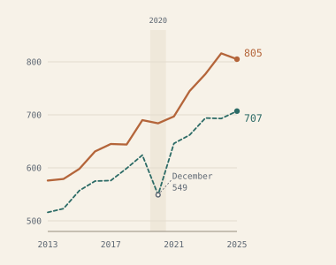
What the series shows
Venue counts fell in 2020 on both measures, by less on the annual one: annual ever-active 690 → 684, December stock 624 → 549. The gap reflects venues that reported a positive month earlier in the year but had stopped by December. Observed entries rose from 57 to 69 per year in the mid-2010s and from 79 to 113 between 2022 and 2024, then eased to 88 in 2025.
Real receipts grew 22% from 2013 to 2019, fell 49% in 2020, recovered to $535.3M in 2021 (about 1% below 2019), and peaked at $614.9M in 2022. They then fell for three consecutive years: $590.9M in 2023, $542.3M in 2024, and $519.1M in 2025. The 2025 total is 4% below 2019, 16% below the 2022 peak, and 17% above 2013.
The per-venue series is more informative. Median real receipts were roughly flat from 2013 to 2019 and peaked in 2015 at $534,552. After the 2020 collapse they recovered to $461,239 by 2022 but never returned to the 2013–2019 range, and fell to $361,409 by 2025. The 2025 median is 26% below 2013 and 22% below 2022. The mean fell 16% over the full period, from $768,930 to $644,788.
Interpretation. The arithmetic identity is total = active venues × mean receipts per venue. Between 2013 and 2025 the first factor rose 40% and the second fell 16%, so the product rose 17%. That is an identity, not a decomposition. It does not show that entry caused the growth in total receipts, and it does not show that competition caused the decline in per-venue receipts. Both could be driven by population and income growth, changing nightlife formats, rising rents, or a composition shift toward smaller venues. The data cannot separate those mechanisms.
Concentration
Receipt concentration rose modestly in the primary band. The venue-level Gini went from 0.5642 in 2013 to 0.5953 in 2025, a change of +0.0311. The top decile's share rose from 39.4% to 41.6%. No single venue dominates: derived from the 2025 venue-month receipts, the largest held 1.4% and the five largest together held 5.9%. The lower band rises much more, from 0.485 to 0.598, and the upper band from 0.605 to 0.642, so the direction is consistent but the magnitude depends on where the in/uncertain line is drawn. A Gini of 0 means every venue reports the same receipts; 1 means one venue holds everything. The move from 0.564 to 0.595 is a modest increase, not a transformation.
The Gini denominator is the number of venues with positive receipts in that year: 576 in 2013 and 805 in 2025, not the 1,667 panel. A Gini computed on the panel would include 149 venues with zero receipts and would not reproduce the accepted statistic.
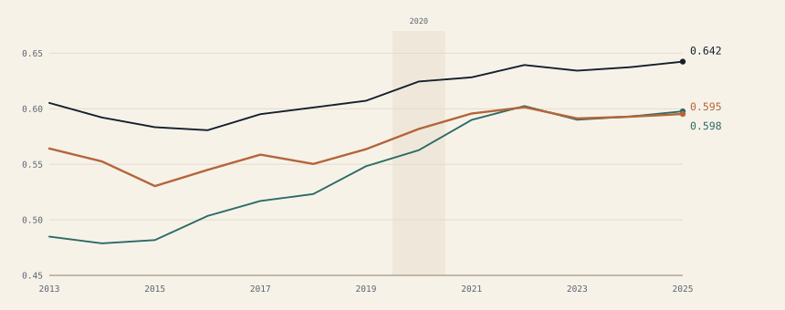
The concentration finding is descriptive. It does not establish operator concentration, market power, or pricing behavior. A rising venue-level Gini is consistent with a few large venues growing faster, with small venues entering, or with both.
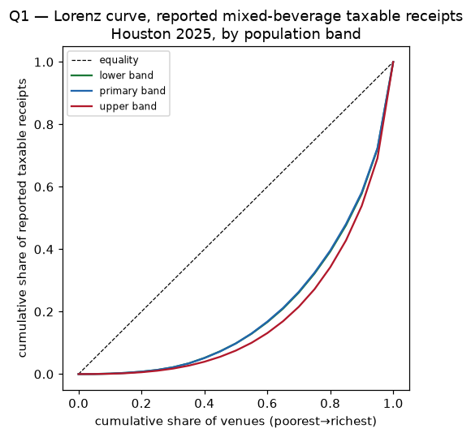
2026
January–June 2026 shows 769 positive venues, $263.2M real receipts, and a median of $195,450. These are half-year figures and are not comparable to annual totals. They are reported only to show that the panel's final observation is a partial year. The provisional flag is carried in internal record.
Source: Phase 6 Q1/Q2 (internal record, internal record, internal record); RE2 (internal record); derived series verification (internal record, §12 of internal record).
Chapter 04
The changing geographic distribution
Activity moved east-northeast, but a fifth of venues still has no named district.
Explore the Chapter 4 charts interactively: the district map, change, clusters and coverage.
Open the interactive chartsThe chapter follows the movement in three different geographies: named districts, fixed clusters, and a continuous surface. Each answers a different question.
Movement and dispersion
Between 2013 and 2025 the real-receipt-weighted centre of nightlife activity moved about 1.6 km east-northeast. The unweighted venue centre moved about 1.0 km in a compatible direction. Dispersion around the weighted centre fell from 16.0 km to 14.5 km, so activity became slightly more spatially concentrated even as the number of venues grew.
Three geographies are kept separate because they answer different questions: 73 fixed named districts, a dynamic cluster layer built from a frozen DBSCAN specification (0.35 km radius, minimum 5 venues), and a continuous spatial summary that does not require either boundary. The report uses districts for named comparisons and clusters for concentration. The two are not interchangeable.
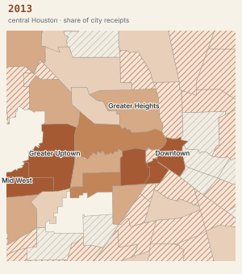
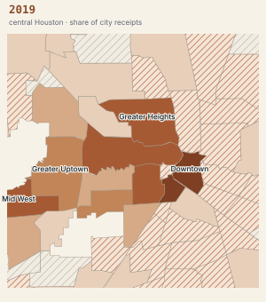
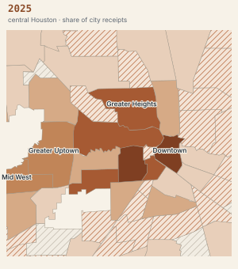
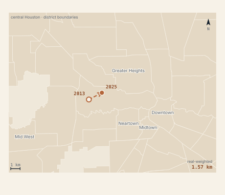
District change
Among the 21 of 73 named districts with no suppressed year, the only ones compared here, real receipts grew most in Greater Heights (+$32.5M, +384%), Downtown (+$24.1M, +69.8%) and Greenway/Upper Kirby (+$11.3M, +64.7%), followed by Neartown–Montrose and Washington Avenue. They fell most in Mid West (−$12.2M, −43.3%) and Greater Uptown (−$8.6M, −30.4%). This is a ranking of a subset, not of all districts: the other 52 districts have at least one suppressed year because a single venue could be identified, and some of them could rank among these. Published district values cover about 71–80% of city receipts depending on the year; the rest sit in suppressed districts and in venues with no named district or usable geocode. Citywide totals are therefore not the sum of the visible district values, and the visible share changes from year to year, so changes in a visible district total are not citywide change.
These are movements in where taxable receipts are reported. They are not evidence of neighborhood improvement, decline, displacement, or policy effects. A district can gain receipts because venues opened, because survivors grew, because reporting moved across a boundary, or because a single large venue opened.
Cluster concentration
The share of city real receipts inside the frozen dynamic clusters rose from 0.278 in 2013 to 0.481 in 2023, then eased to 0.404 in 2025. The share of venues in clusters, derived from the continuous spatial summary layer for this report, rose from 0.219 to 0.321 over the same period. Because the frozen specification fixes cluster membership, the change measures where activity sits inside a fixed geography. It cannot show new clusters emerging.
District-level receipt concentration also rose (computed on all geocoded receipts, including districts whose values are suppressed in this edition): normalized entropy fell from 0.785 to 0.747 and the receipt HHI rose from 0.055 to 0.064 (both derived from internal record). Both point the same way as the venue-level Gini, using a different unit.
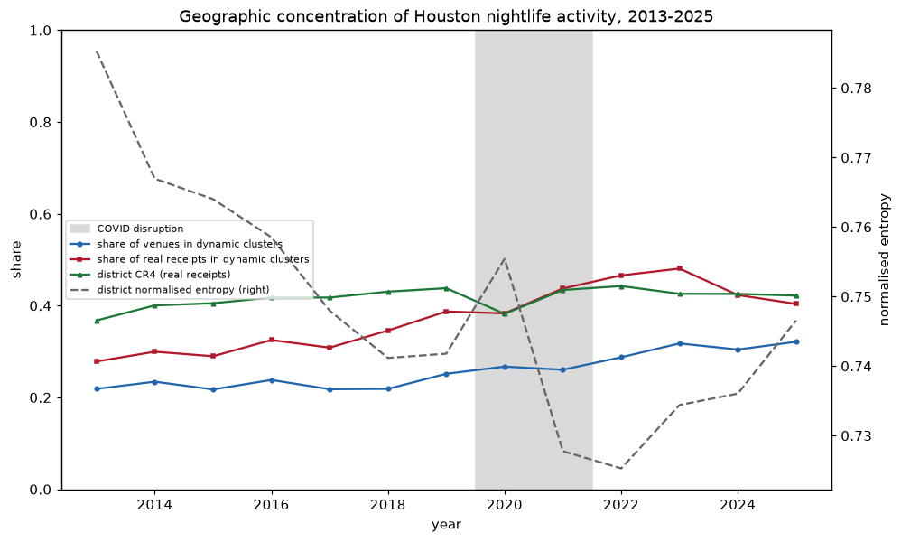
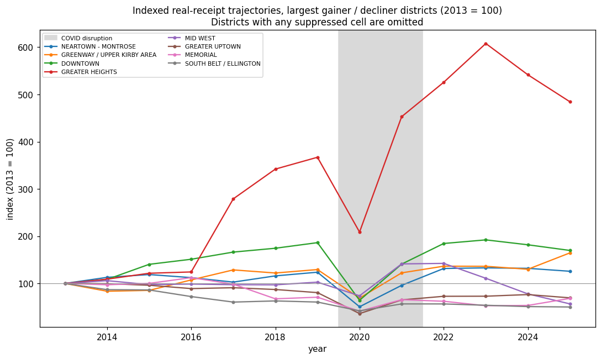
What the geography cannot establish
Cluster lineage depends on overlap thresholds: a missed continuation link fragments a lineage and inflates the apparent "emerging" share. The decomposition that assigns growth to continuing, entering, and exiting venues is descriptive and its lineage terms are marked HOLD. Coverage is the larger limitation: 77–81% of strict-city venues assign to a named district, 12–16% are unassigned, and a further 6–7% lack a usable geocode, so 19–23% of venues sit in pseudo-district rows. A district trajectory could shift if those venues were resolved. RE2's acceptance summary originally stated 10–14%; a 2026-11-11 correction note and its own coverage table (internal record) give 19–23%, which this report uses. District polygons are current-vintage, not historical.
Source: RE2 (internal record, internal record); figures from internal record.
Chapter 05
Venue lifecycle trajectories
Venues follow several shapes. The shapes are descriptions, not stages a business must pass through.
A venue's history can rise, flatten, peak, or fade. The analysis groups those histories into shapes, then asks how much of the pattern depends on the thresholds used to define it.
Entry and observation
993 venues in the strict-city primary population are launch-observed: their first observed filing occurs after January 2013 and they have no pre-2013 history. Observed entries rose from 57 per year in 2013–2014 to 113 in 2024, with a pandemic dip to 49 in 2020. Of the remaining 674 venues, 548 are left-truncated and 126 carry neither flag: they filed only zeros, or only in months where the launch rule cannot apply (Chapter 2). Left-truncated venues are never counted as entries. This is a deliberate asymmetry: early-period entry is unobservable, so the entry series understates the early 2010s.
Six observed shapes
A trajectory analysis clusters launch-observed venues with at least 18 positive months on seven shape descriptors: peak position, end-to-start change, end-to-peak change, first-half and second-half slope, roughness, and life span. Each venue's receipts are normalized to its own median positive month, so the clusters describe shape, not size.
The analysis uses the upper band: 2,247 venues, with 953 additional venues excluded for thin history. Six clusters are retained (k = 6; silhouette 0.190; bootstrap adjusted Rand 0.80, minimum 0.61):
| Archetype | Upper band | Primary band | Typical life span |
|---|---|---|---|
| Long-lived stable | 558 | 144 | 91 months |
| Mature flat | 519 | 132 | 32 months |
| Young riser then plateau | 394 | 115 | 33 months |
| Gradual builder | 267 | 94 | 71 months |
| Sustained riser | 255 | 105 | 89 months |
| Rise then decline | 254 | 92 | 51 months |
| Thin history (excluded) | 953 | 311 | n/a |
The primary-band counts are context, not a second estimate: the clustering was run on the upper band, and the labels are not recomputed at the primary band.
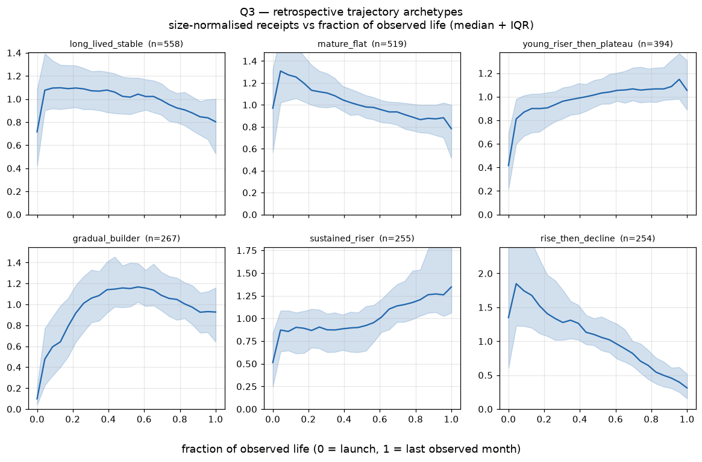
Lifecycle states are labels, not stages
The panel also carries an as-of lifecycle state computed only from information available at each month: pre-launch, launch, growth, maturity, decline, and thin history. The thresholds are tuned defaults (growth-slope threshold 0.03, decline_drawdown = 0.25, three consecutive decline months). Across the tested grid, the growth share ranges from 0.13 to 0.33 and the decline share from 0.18 to 0.26, with month-to-month persistence around 0.66.
Two cautions follow. The states are threshold-dependent classifications, not validated developmental stages, and persistence near two-thirds means a state label at one month is a weak predictor of the label three months later. The archetypes are retrospective shapes over a completed history, not a typology that a venue can be assigned to in real time.
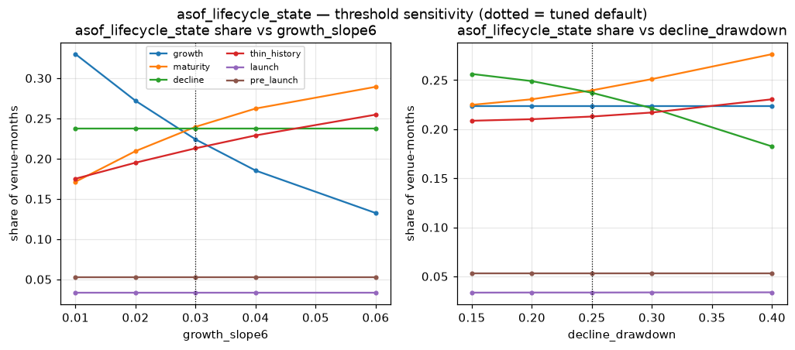
Duration
Archetype life spans range from roughly three years (young riser, mature flat) to seven and a half years (long-lived stable, sustained riser). These are observed spans inside an open window, so they are lower bounds for venues still reporting and censored for venues whose history predates 2013. The project does not estimate a survival curve from them; that would require the closure state machine in Chapter 6.
Source: Phase 6 Q3 (internal record, internal record q3_archetypes); lifecycle sensitivity (internal record).
Chapter 06
Closure, disappearance, and competing risks
Most exits are replacements at the same address, and the record does not watch the transition.
Explore the Chapter 6 charts interactively: final states, count grains and competing risks.
Open the interactive chartsWhen a venue stops filing, the record goes quiet. Quiet is not the same as closed, and the difference changes every closure count in the report.
The state machine
Phase 7 classifies every one of the 8,445 panel venues into one state, using reporting continuity, TABC responsibility and status evidence, documented successors, relocation edges, and post-panel records. The evidence mix matters:
| Evidence type | Venues |
|---|---|
| Reporting at panel end | 4,324 |
| TABC current active | 4,470 |
| TABC cessation status | 1,739 |
| Documented successor or replacement | 1,425 |
| Tax-admin responsibility end | 1,074 |
| Insufficient evidence | 1,324 |
| Reporting gap or zero dormancy | 113 |
| Documented relocation edge | 180 |
Evidence rows exceed venues because a venue can carry several types. The state assignment uses the strongest available evidence and preserves the full row-level evidence table.
State counts
| State | Venues |
|---|---|
| Operating | 4,324 |
| Closed | 2,499 |
| Relocated | 180 |
| Unknown | 1,324 |
| Dormant | 113 |
| Likely closed | 5 |
| Total | 8,445 |
These counts are for all 8,445 panel venues, not the 1,667 strict-city primary population. A closure rate computed on 8,445 includes uncertain and out classifications and venues outside the city.
Within the 2,499 closed states, 1,074 are ordinary closures and 1,425 are concept-successor replacements at the same premise. A further 5 venues are likely_closed and censored in the primary competing-risk definition. That is why the classified exit-type count of ordinary closures is 1,079 while the competing-risk event count is 1,064.
Count grains, stated once
| Grain | Ordinary closure | Concept succession | Relocation |
|---|---|---|---|
| Classified exit type, all venues | 1,079 | 1,425 | 180 |
| Competing-risk event (primary) | 1,064 | 1,424 | 180 |
Sensitivity, likely_closed promoted | 1,069 | 1,424 | 180 |
Ten ordinary and one succession closure have no observed event in the competing-risk file, and five likely-closed venues are censored there. That is why the ordinary count is 1,064 rather than 1,074.
Competing risks and timing
Of the 8,445 panel venues, 2,668 have a validated exit event and 5,777 are censored at the panel end. Cumulative incidence over the full panel is 0.169 for concept replacement, 0.126 for ordinary closure, and 0.021 for relocation. Cumulative incidence is the share of the panel that experiences the event by the end of the window. It is not an annual closure rate.
Event timing is uneven in precision: 336 events are exact or near-exact, 1,118 are month-level, and 1,214 are bounded intervals. The interval width has a median of 1 month, but the 75th percentile is 10 months, the 90th is 29, and the maximum is 153. A closure "date" in this dataset is therefore often a window, and Phase 9's timing sensitivity uses lower, midpoint, and upper bounds.
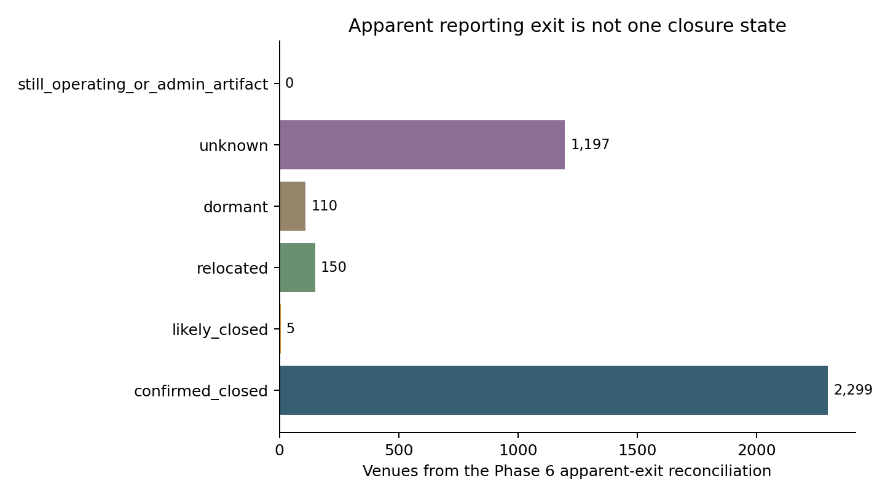
What remains unknown
1,324 venues (15.7%) have insufficient evidence for any state except unknown. This is the largest single limitation on closure analysis. The project leaves them censored: it does not impute them, treat them as survivors, or drop them from the panel.
A further 104 venues have known post-panel events, 92 of them administrative status cessations. In documented cases, venues that were analytically operating at the June 2026 panel end closed later. Those events are preserved outside the primary risk period and are never backdated.
Source: Phase 7 (internal record, internal record, internal record); internal record count-grain note.
Chapter 07
Premise reuse and concept succession
Successors often report more than their predecessors. Matching narrows the comparison but does not make it causal.
When one concept replaces another at the same address, does the replacement do better?
How much reuse there is
2,335 concept successions are confirmed: 2,191 at the premise level and 144 where only the site is known and sole-tenancy plus a material break corroborates the link. A further 89 operator-entity refilings were removed from the succession set because one side of the edge is an operating or holding company rather than a trade name. 141 site-only candidates remain uncorroborated. The median gap between predecessor and successor is 3 months and the 90th percentile is 44 months, so "same address, new concept" covers both quick rebrands and long-vacant reuse.
Two succession counts appear in this report. The 1,425 in Chapter 6 counts panel venues, across all bands and geographies, whose own exit state is replacement. The 2,335 here counts succession edges across the full identity history of 10,314 venues, including predecessors that predate the 2013 panel. Edges and exit states are different units on different populations.
The matched comparison
The publication result uses a matched, common-support comparison rather than the raw descriptive ratio. Pairs must share a premise, be strict-city, have a positive predecessor baseline, and fall within a −3 to +24 month gap; predecessor baselines are restricted to the 5th–95th percentile. 504 pairs across 409 sites survive from 1,038 candidate pairs.
| Metric | Value |
|---|---|
| Matched pairs | 504 |
| Sites | 409 |
| Successor higher | 57.1% |
| Median successor/predecessor ratio | 1.149 |
| Mean log ratio | 0.144 (95% CI 0.025–0.247) |
| Approximate difference | +15.5% |
In plain terms, the average successor reported about 15.5% more than its predecessor. The successor measure is the mean of months 7–18 after opening; the predecessor measure is the mean of its final 12 positive months. Both are reported mixed-beverage taxable receipts, so the ratio compares tax base, not profit, investment, or quality.
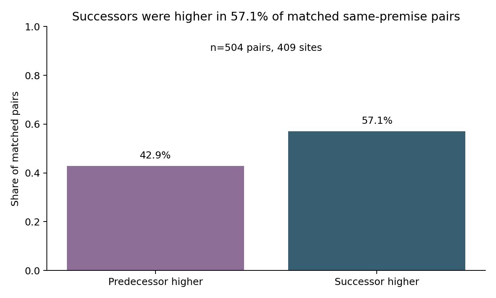
Why this is an association
Replacement concepts are selected into sites, moments, operators, and investment conditions. A successor that opens after a remodel, in a recovering corridor, or under a stronger operator is not a random draw. Matching improves comparability on observed dimensions; it does not remove selection on unobserved ones. The Phase 6 raw comparison put successors higher in 60.1% of cases; the matched result is 57.1%, and the matched result is the one used here.
The finding supports a narrow statement: at the same premise, replacement concepts more often than not report higher receipts than the concepts they replaced, with a median ratio near 1.15. It does not support a claim that replacement causes higher receipts.
Source: Phase 10 Q11 (internal record, internal record); Phase 6 succession profile (internal record succession_profile); Phase 4 entity resolution.
Chapter 08
Findings the evidence could not establish
Seven analyses stopped at their own gates. The stopping is part of the result.
Not every question produced an answer. In each of the seven cases the limit is about evidence or identification, not about the world.
Ownership change
Phase 10 validated 27 clean ownership transfers, 26 usable. A cohort-relative event study with not-yet or never-treated controls estimates a post-period difference of +1.539 log points (95% CI 0.048–3.083). The estimate is positive and excludes zero, and it is not an ownership effect: the pretrend diagnostic fails (joint bootstrap p = 0.036; maximum absolute pretrend 1.463 log points), meaning venues that changed ownership were already on a different trajectory before the transfer. The corrected estimate replaced an earlier +0.531 that used the wrong baseline. The design is invalidated, not the point estimate.
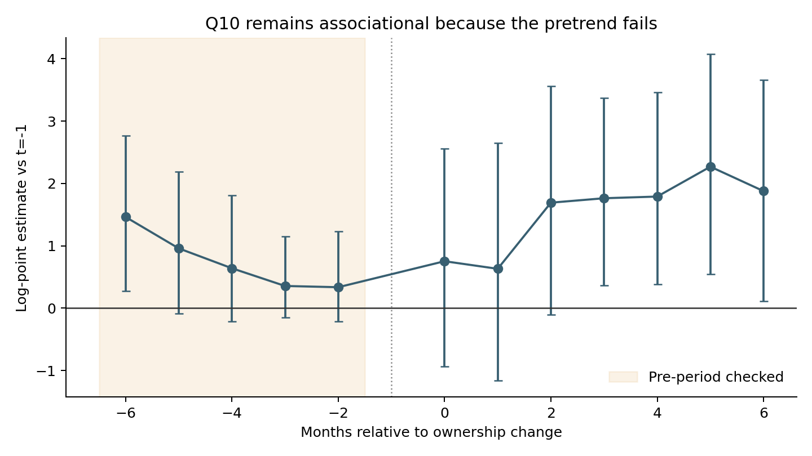
Brand and operator
A brand in this project is an administrative trade-name grouping. It is not an operator, a marketing concept, or a quality measure. P1 found that the credible brand population (394 brands, 1,234 venues) has no recorded pre-specification, and that within-premise brand identification rests on only 119 premises that switched brand, 6.9% of observations. Both models are held. Phase 8's within-brand decomposition points the same way: 72.2% of venue-level mean residual variance is between locations of the same brand, so brand explains little of the variation that matters.
Operator effects are held because the project has no operator identifier that is not an administrative artifact. The 89 reclassified operator-entity edges and the 42 still-unresolved cases show why building one from taxpayer names would reproduce errors the project already corrected.
Workplace employment (P2)
The P2 analysis asks whether district workplace employment in year t−1 is associated with district real receipts in year t, across 73 districts and 675 district-years from 2014 to 2025, excluding 2020–2021. The frozen estimate is β = 0.357 (district-clustered CR1 SE 0.479), 95% CI [−0.598, 1.313], p = 0.459. The point estimate corresponds to +10% lagged jobs and +3.5% receipts, with an interval from −5.5% to +13.3%.
H1 was not rejected. That is not evidence that the association is zero. The accepted classification is "Geographic-attribution fragility", and the trigger was individual-district influence: dropping FOURTH WARD moves β to 0.029, a change larger than the frozen threshold. Tract-weighted and block-internal-point estimates agree within 7.7%, so the class name describes the permitted language, not a disagreement between attribution methods. District assignment covers 77–81% of venues and roughly four-fifths of receipts; LODES measures workplace jobs, not visitors.
Residential development
The Phase 4 research-expansion gate fails on data quality: two annual files are unavailable, 81.9% of permit rows assign to a district against an 85% threshold, 80.8% are exact duplicates, and 83.6% have non-positive unit counts. No model was fitted. The correct conclusion is that the City permit series cannot currently support a district-year development layer, not that development does not affect nightlife.
Age-dependent competition (F3)
F3 asked whether competition effects vary with venue age. It found the panel cannot identify that contrast. Direct-exposure support is 114 venues for young-versus-transition and 54 for young-versus-mature; 31.1% of within-venue exposure changes occur in 2020–2021 and 42.5% in five districts; the mature group is survivor-selected; and linear tenure × exposure is a renormalization of calendar-time and venue slopes rather than an identified tenure parameter. F3-A and F3-B are HOLD; F3-C is DEFER. This rules out a design, not a relationship.
The World Cup window
Phase 10 compares 36 high-exposure venues with 207 controls in June 2026. The high-minus-low abnormal contrast is +1.112 log points, about 204%. The mean is outlier-driven: the high-group median is +0.155 log points, about 17%, and the control median is 0.0. A June 2025 placebo already shows +0.312. Only one month is inside the panel, match-day attribution is impossible, and July is outside the window. Phase 11 reduced the exposure set to 34 and found pre-2026 documentary sports evidence for one venue. The result stays supplementary.
Programming and daypart
Dated programming evidence was too sparse to analyze: it is a convenience sample with no continuous time series. Q6 is deferred, and no reweighting could fix an evidence base this thin.
Source: Phases 9–11 and P2/F3 acceptance records; internal record; internal record; internal record.
Chapter 09
Associations with nearby businesses and neighborhoods
Nearby venues and neighborhood change are associated with performance. The associations are not causal.
Two questions sit close together here: do nearby venues matter, and does neighborhood change precede nightlife change? The data can show association. It cannot show cause.
Same-concept co-location
Phase 8 estimates a two-way fixed-effects panel of 1,513 geocoded strict-city primary venues over 101,643 venue-months from 2013 to 2026. Exposure is lagged one month and measured at 250, 400, 500, and 1,000 metres. The primary radius is 500 metres.
| Term (500 m) | Coefficient | SE | p | Empirical contrast |
|---|---|---|---|---|
| Direct same-concept competitors | 0.0291 | 0.0111 | 0.009 | IQR +1 venue: +3.0% |
| Complementary nightlife | −0.0099 | 0.0067 | 0.140 | IQR +3 venues: −2.9% |
| Total nightlife mass (companion) | 0.0079 | 0.0057 | 0.165 | IQR +4 venues: +3.2% |
Two-way clustering by venue and month leaves the direct term significant (p = 0.008). The direct coefficient is 0.0319 at 250 m, 0.0358 at 400 m, and 0.0164 at 1,000 m. Residual spatial dependence is negligible by the prespecified diagnostic (Moran I = 0.046 across 30,924 neighbour links).
Read correctly, the result is co-location. In plain terms, a typical one-venue increase in nearby same-concept competitors is associated with about 3% higher receipts. Venues of the same concept cluster where demand, rents, foot traffic, and zoning already favor nightlife. The design cannot distinguish "more nearby competitors raise receipts" from "high-performing areas attract more competitors." It does not measure consumer choice, prices, quality, or entry. The total-mass companion is indistinguishable from zero, so the positive term is specific to same-concept density rather than to nightlife activity in general.
Neighborhood composition
Research Expansion 3 runs within-district and year fixed-effects models on 73 districts in its discovery specification (68–72 in the confirmation rows), 2014–2024, then a confirmation pass on stable-geometry crosswalks. The estimand is change-on-change: a three-year change in ACS composition against the next year's change in log active venues or log real receipts.
Seven of the eight families in the confirmation matrix were held or killed; one survived:
| Family | Final decision |
|---|---|
| Population/density → nightlife | KILL (sign reversed at confirmation) |
| Prosperity → nightlife | PROMOTE (venue counts only) |
| Housing stock → nightlife | HOLD |
| ACS housing-market conditions → nightlife | HOLD |
| Parcel/property development → nightlife | HOLD (no validated layer) |
| Nightlife → subsequent neighborhood change | HOLD |
| Nonlinear prosperity/displacement | HOLD |
| Demographic composition → concept mix | HOLD |
Decision vocabulary: PROMOTE means retained in the confirmed set; HOLD means unresolved; KILL means the discovery signal did not survive confirmation.
The promoted prosperity family is narrow. Districts whose college-educated share rose and whose poverty rate fell subsequently added active venues: college share +0.531 (t = 1.92), poverty −0.876 (t = −3.40), across 413 district-years. College share alone is borderline at conventional levels; the poverty coefficient carries the family. No receipts-per-venue association survived confirmation.
The population/density family illustrates why the confirmation pass matters. It was the strongest discovery signal (+1.14e-05, t = 3.69 for receipts) and it reversed sign under the stable-geometry crosswalk (−6.51e-05, t = −2.79). The accepted result is the confirmation, not the discovery.
ACS 5-year vintages overlap heavily, so even a one-year lag is not clean temporal separation. These are associations in changes, not neighborhood effects.
What must not be combined
Phase 8 measures co-location of venues; RE3 measures composition changes; P2 measures workplace employment; RE4 could not measure development. They use different populations, units, and windows. Assembling them into a single "neighborhood effects" account would be a synthesis error, not a finding.
Source: Phase 8 (internal record, internal record); RE3 (internal record, internal record).
Chapter 10
Prediction and its limitations
A ranked list of risk is useful. A probability that a specific venue will close is not supported.
A risk score is easy to produce and hard to trust. This chapter asks whether a venue's observed history can rank its risk of a valid exit, and whether the ranking holds out of time.
The task
Phase 9 asks whether a venue's observed history can rank its risk of a validated adverse event (ordinary closure, relocation, or concept replacement) within 3, 6, or 12 months. The label uses Phase 7 timing and excludes unresolved outcomes and known post-panel events. Splits are temporal and purged so that the full future label window stays inside the same historical regime as the feature row. All predictors are as-of; the leakage audit found no future information in the feature set.
Eligible samples are 1,420 venues at 3 months and 1,353 at 12 months, with test prevalence 2.0% and 8.4% respectively.
Results
| Horizon | Model | Test PR-AUC | Test ROC-AUC | Prevalence |
|---|---|---|---|---|
| 3 months | Drawdown/zero logistic | 0.056 | 0.683 | 0.020 |
| 3 months | Penalized logistic | 0.050 | 0.697 | 0.020 |
| 3 months | GBM | 0.047 | 0.713 | 0.020 |
| 3 months | Recent-receipts logistic | 0.043 | 0.685 | 0.020 |
| 6 months | Penalized logistic | 0.102 | 0.698 | 0.042 |
| 6 months | Drawdown/zero logistic | 0.101 | 0.676 | 0.042 |
| 6 months | Recent-receipts logistic | 0.085 | 0.689 | 0.042 |
| 6 months | GBM | 0.084 | 0.690 | 0.042 |
| 12 months | Drawdown/zero logistic | 0.185 | 0.687 | 0.084 |
| 12 months | Recent-receipts logistic | 0.165 | 0.699 | 0.084 |
| 12 months | Penalized logistic | 0.165 | 0.695 | 0.084 |
| 12 months | GBM | 0.125 | 0.651 | 0.084 |
PR-AUC measures how well a ranking finds the venues that exit. Its no-skill baseline is the share that actually exit, so 0.185 at 12 months is a modest improvement over 0.084, not an accuracy of 18.5%.
The GBM is not the best model at any horizon on PR-AUC. At 3 months it ranks third of four but has the highest ROC; at 6 months it is last on PR-AUC; at 12 months it is last on both PR-AUC and ROC. A one-line rule using drawdown and consecutive zero months matches or beats it on PR-AUC at every horizon.
Calibration does not rescue the ranking. At 12 months the test Brier score is 0.098 against a prevalence of 0.084. A constant forecast at the base rate would score about 0.077, so the model is worse than a constant on squared error, and the calibration curve fitted on validation drifts on the future test set. Top-decile lift at 3 months is 2.75; at 12 months it is lower.
On the deterministic 20% unseen-venue holdout, later-period performance is modestly better than the temporal test: at 12 months PR-AUC 0.166 and ROC 0.690 across 2,604 rows. That is consistent with the model capturing venue-level persistence rather than a stable temporal signal.
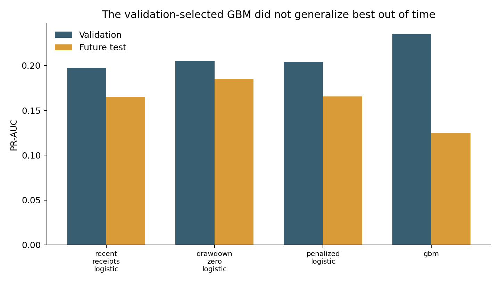
Ranking is not forecasting
The practical distinction is between ranking and operational forecasting. A ranked list can prioritize review; a probability statement that a specific venue will close next quarter would require stable calibration, known base rates, and performance that holds across regimes. This model does not provide that. The honest claim is narrow: simple deterioration signals rank exit risk better than chance, and a fitted model does not improve on them out of time.
Source: Phase 9 (internal record, internal record, internal record, internal record).
Chapter 11
Conclusions and implications
What the record can describe, what it cannot explain, and what would change the picture.
The report ends where the evidence does. Some findings are firm, some are fragile, and some questions remain open.
What is descriptively established
The descriptive findings are consistent across the checks in this report. The strict-city filing population grew, the combined real tax base grew more slowly, and the median venue became smaller. Receipts became modestly more concentrated. Activity shifted east-northeast and clustered, with a fifth of venues outside named districts. Those are measurements of a tax-filing population under stated rules, not a census of nightlife. They are robust to classification band in direction and not in magnitude.
What is associated but not causal
At the same premise, successors report higher receipts than predecessors in 57.1% of 504 matched pairs, median ratio 1.15. Same-concept venues within 500 m are positively associated with receipts, about +3.0% per interquartile increase in nearby competitors. Districts whose college share rose and poverty rate fell subsequently added venues. None of these is a causal estimate: sites, timing, location, and composition are all selected.
What can be predicted, with limits
Exit risk can be ranked above chance at 3, 6, and 12 months. A simple drawdown and zero-reporting rule matches or beats the fitted GBM on PR-AUC at every horizon, and a penalized logistic edges both at 6 months. Performance decays with horizon and drifts out of time. The output is suitable for prioritization, not for calibrated probability or automated decisions.
What remains unknown
The true number of operating nightlife businesses, because the record observes filers. Verified opening and closing dates, because the record observes filings and inferred states. Closure causes, because no systematic documentary source exists. Operator identity and operator effects. Whether competition helps or hurts venues. Whether neighborhood composition drives nightlife or the reverse. The size of the World Cup effect beyond one June. Whether programming differences matter, because the evidence base is two venues.
What further evidence would change the picture
Four investments would materially improve the answers, in descending value.
- Verified opening and closing dates from licensing history, permits, or archives. This would repair the age construct, the survival analysis, and the entry series at once.
- Operator identity from corporate filings or a curated entity graph. This is the only route to the operator question the project repeatedly postpones.
- Pre-2013 receipt history for the full neighbor population, which is the binding constraint on F3-C and on any long-run competition design.
- Systematic documentary or POS data for programming, daypart, and closure causes. Piecemeal case evidence cannot substitute.
None of these is a re-run of an existing analysis. Each requires data the project does not have.
The methodological contribution
The project's methodological contribution is a measurement discipline: identity resolved across premises, brands, and legal entities; zeros, absences, and closures kept distinct; as-of features leakage-tested; and claim levels enforced. Feasibility gates stopped analyses the data could not support, and four further analyses produced no defensible estimate.
A proportionate conclusion: Houston's nightlife sector added venues and spread east-northeast while the typical venue's real tax base shrank. The record can describe that with confidence, but it cannot yet explain it. That is not a failure of the data; it is what an administrative record can support. The next step is not another model on the same file. It is better evidence about what happens inside the businesses the file counts.
Methods
What the numbers mean, and where they stop.
Definitions, denominators, limitations and reproduction notes for the full record.
Limitations
Measurement. Reported mixed-beverage taxable receipts are a tax base, not revenue, profit, demand, or attendance. Beverage-mix detail is missing for 3,389 venue-months; totals are retained and component shares are null, not zero.
Population. The panel observes filers. 149 strict-city primary venues never report a positive month. The closure universe is 8,445 venues across all bands and geographies, not the 1,667 headline population.
Classification. The in/uncertain boundary at restaurant-bars is a judgment call. The primary band is the publication population; lower and upper bands are robustness context. The r12 artifact has no recorded count-level re-acceptance.
Geography. 92.4% of primary venues have usable coordinates. Unresolved venues have different receipt profiles, so spatial estimates apply to the geocoded subsample. District polygons are current-vintage.
Closure. 1,324 venues (15.7%) are unknown. Event dates are interval-bounded for 45% of events, with a 90th-percentile width of 29 months. No documentary cause source exists.
Temporal. 2026 is January–June only and is never treated as an annual observation. Left truncation removes early entry from the entry series.
Prediction. Performance drifts out of time and the fitted model does not beat a simple rule. Calibration is not stable enough for probability statements.
Derived evidence. The real-receipts and per-venue series are noncanonical derived figures. They are verified against accepted inputs but are not accepted results.
External validity. Findings describe Houston's strict-city mixed-beverage filers from 2013 to 2026. They do not generalize to other cities, to non-filing venues, or to the informal nightlife economy.
Count grains and denominators
Venues. 1,667 strict-city primary panel; 1,518 ever-positive; 149 never-positive; 1,635 observed by 2025-12; 1,540 geocoded; 1,513 competition sample; 8,445 all-panel.
Closures. 1,074 ordinary + 1,425 succession = 2,499 closed states; +5 likely_closed = 1,079 classified ordinary exits; competing-risk events 1,064 ordinary + 1,424 succession + 180 relocation = 2,668.
Receipts. Annual ever-active denominators 576 (2013) and 805 (2025); December stock 516 and 707. Gini and top-decile statistics use the positive-receipt denominator.
Time. Panel 2013-01 to 2026-06; annual comparisons 2013–2025; 2026 Jan–Jun provisional.
Reproduction
# derived receipt series (read-only, writes one CSV)
/usr/local/bin/python3 internal record
# full pipeline from raw snapshots (not run for this report)
python -m venv .venv
.venv/bin/pip install -r requirements.txt
.venv/bin/pip install -e .
.venv/bin/python internal record
# … phases 2–12, then internal record and pytest -qRaw downloads, intermediate parquet, and the canonical panel are gitignored. The derived-series script records SHA-256 hashes for all four of its inputs on every run.
Sources
Traceability.
Each headline claim maps to an accepted artifact.
| Claim | Artifact | Acceptance | Status |
|---|---|---|---|
| Panel construction, 8,445 venues | internal record | internal record | Canonical |
| Venue counts, concentration | internal record, internal record, internal record | internal record | Canonical |
| Archetypes | internal record | internal record | Canonical |
| Closure states, competing risks | internal record, internal record | internal record + grain note | Canonical |
| Competition, within-brand | internal record | internal record | Canonical |
| Prediction | internal record, phase9/ | internal record | Canonical |
| Ownership, succession, World Cup | internal record | internal record | Canonical |
| Documentary evidence | internal record | internal record | Canonical |
| Geography, clusters | internal record | internal record | Noncanonical |
| ACS associations | internal record | RE3 report + decision matrix | Noncanonical |
| Development gate | internal record | RE4 report | Noncanonical |
| Brand readiness | internal record | n/a | Noncanonical |
| Employment | internal record | internal record | Noncanonical |
| Age-competition feasibility | internal record | internal record | Noncanonical |
| Real receipts, medians | internal record | This draft (derived) | Derived, noncanonical |
Evidence tables with all 24 findings, methods, uncertainty, and strength classifications are in internal record and internal record §2 and §6.